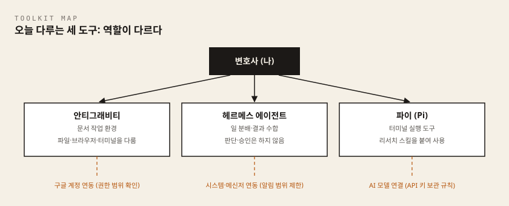
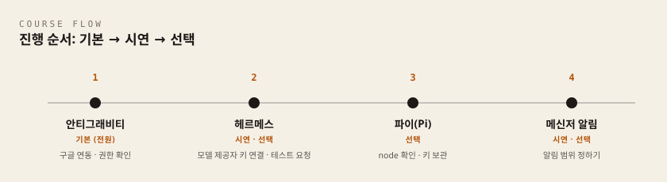

이 차시에서 준비할 것
시작하기 전에 아래를 준비합니다. 설치 절차 자체는 이 문서에 담지 않았습니다. 각 설치가이드를 먼저 따라 하고, 이 차시에서는 제대로 됐는지 확인하고 기록하는 일에 집중합니다.
무엇을 꼭 설치해야 하나요
먼저 안심하셔도 되는 이야기부터 하겠습니다. 세 도구를 모두 설치해야 다음 차시로 갈 수 있는 과정은 아닙니다. 도구마다 역할이 다르고, 오늘 여러분이 해야 할 범위도 다릅니다.
| 범위 | 도구 | 누가 하나요 |
|---|---|---|
| 기본 실습 | 안티그래비티 | 전원. 수업용 개인 구글 계정으로 연동까지 마칩니다 |
| 강사 시연 | 헤르메스 | 전원이 시연을 보고 조율 구조를 관찰합니다. 환경이 준비된 분만 선택 설치 |
| 선택 심화 | 파이(Pi) | 터미널 환경이 준비되고 시간이 남는 분만 |
| 확장(숙제 가능) | Codex CLI · korean-law-mcp | 관심 있는 분. 오늘 못 하면 빈칸으로 두고 숙제로 표시 |
오늘의 합격선은 안티그래비티 하나를 제대로 연동하고, 무엇을 열어 주었는지 기록으로 답할 수 있는 상태입니다. 헤르메스·파이는 설치 여부보다 "조율이란 무엇인지, 터미널 도구는 어떻게 생겼는지"를 눈으로 확인하는 데 목적이 있습니다.
준비물
- 관리자 권한이 있는 노트북 (Windows 10 이상 / macOS 가능)
- 수업용 개인 구글 계정 — 이번 수업을 위해 따로 만든(또는 따로 지정한) 개인 구글 계정입니다. 업무 계정, 평소 쓰는 개인 계정은 쓰지 않습니다
- 남은 저장 공간 10GB 이상, 와이파이 연결
- 1차시 결과물: 내가 위임하고 싶은 업무 목록
- MCP를 연결할 AI 도구 1개 — 기본은 LAB 1에서 설치하는 안티그래비티입니다 (Claude Desktop·Claude Code를 이미 쓰고 있다면 그쪽도 됩니다). LAB 5(확장)에서만 사용합니다.
- 오늘의 기록을 담을 파일 하나 — 실습지를 화면에서 채운다면 결과물 파일명을
lawyer-ax-worksheet-02-agent-toolkit-setup.md로 저장해 두시길 권합니다. 차시별로lawyer-ax-worksheet-0N-{주제}.md형태로 이름을 맞춰 두면 7차시까지 결과물이 한 폴더에서 순서대로 정렬됩니다
미리 읽고 따라 할 설치가이드
| 순서 | 설치가이드 | 범위 | 이 차시에서 쓰는 곳 |
|---|---|---|---|
| 0 | 공통 준비(Windows) | 기본 | 전체 — PowerShell·Node.js·실습 폴더 |
| 1 | 안티그래비티 설치가이드 | 기본 | LAB 1 |
| 2 | 헤르메스 설치가이드 | 시연·선택 | LAB 2 |
| 3 | 파이(Pi) 설치가이드 | 선택 | LAB 3 |
| 4 | Codex CLI 설치가이드 | 확장 | LAB 4 |
| 5 | korean-law-mcp 설치가이드 | 확장 | LAB 5 — 안티그래비티(또는 Claude Desktop·Claude Code)에 연결 |
| 6 | LiteLLM 연결가이드 | 연결(설치 없음) | LAB 2·LAB 3 — 헤르메스·파이에 주관사 AI 모델 창구 연결 |
설치가 아직 안 끝났어도 괜찮습니다. LAB 1~5의 첫 단계가 "준비 상태 확인"(30초 확인법)이므로, 거기서 안 됐다는 것이 확인되면 해당 설치가이드로 이동했다가 돌아오면 됩니다. 시연·선택·확장 범위는 안 하기로 정하는 것도 정당한 선택이며, 그때는 실습지에
선택하지 않음이라고 적으면 그 칸이 완성된 것입니다.
아래 교재 부분을 먼저 읽고 실습지와 랩으로 넘어가면, 각 화면에서 무엇을 확인해야 하는지 미리 알고 진행할 수 있습니다.
이 차시에서 처음 나오는 말
| 용어 | 한 줄 설명 |
|---|---|
| 에이전트 | 사람이 시킨 일을 스스로 여러 단계로 나눠 실행하는 AI 프로그램 |
| 하네스 | AI 두뇌와 도구를 묶어 두는 작업대. 어떤 폴더·도구를 쓸 수 있는지, 무엇이 금지인지, 실패하면 어떻게 멈출지를 정해 둔 설정입니다 |
| 연동 | 도구에 내 계정·폴더·메신저를 연결하는 일. 곧 권한을 위임하는 일입니다 |
| 계정 연동(OAuth) | 비밀번호를 넘겨주지 않고, 정해진 범위의 권한만 위임하는 표준 인증 방식 |
| 터미널 | 글자로 컴퓨터에 명령을 내리는 창. Windows에서는 PowerShell이라는 이름의 터미널을 씁니다 |
| API 키 | 도구가 AI 모델에 접속할 때 쓰는 비밀번호 같은 긴 문자열. 절대 문서에 적지 않습니다 |
| MCP | AI를 외부 데이터·도구에 연결하는 표준 규격. 4차시에서 쓸 법령 조회 도구가 이 방식으로 연결됩니다 |
| 프롬프트 | AI에게 보내는 요청문. 입력창에 써 넣는 글 전체를 말합니다 |
마크다운(.md) | 글자만으로 제목·목록·표를 표현하는 간단한 문서 형식. 메모장으로도 열립니다 |
- 과정: 변호사 AX 나노디그리
- 차시: 2차시 / 총 7차시
- 핵심 질문: 내 노트북에 나만의 에이전트 작업 환경을 어떻게 갖출까요?
- 이번 차시 결과물: 에이전트 작업 환경 점검표 1부
이 차시에서 배우는 것
이번 차시는 이론보다 손이 바쁜 시간입니다. 전원은 안티그래비티를 중심으로 기본 실습 환경을 만들고, 파이(Pi)는 설치가 가능한 분이 선택해서 진행합니다. 헤르메스는 강사 시연으로 조율 구조를 익히며, 환경이 준비된 분만 선택 설치합니다.
다만 설치는 프로그램을 내려받는 일로 끝나지 않습니다. 설치 과정에서 여러분은 자신의 계정, 파일, 메신저에 접근할 권한을 도구에 위임하게 됩니다. 이 위임의 범위를 모른 채 설치를 마치면, 이후의 모든 실습이 확인되지 않은 권한 위에서 돌아가게 됩니다.
그래서 이번 차시의 완료 기준은 "설치가 끝났는가"가 아니라 "무엇을 열어 주었는지 답할 수 있는가"입니다. 이 교재를 마치고 나면 다음을 할 수 있습니다.
- 안티그래비티, 헤르메스 에이전트, 파이(Pi)의 역할 차이와 기본·시연·선택 범위를 설명하고, 내 환경에 맞는 도구를 설치할 수 있습니다.
- 계정 연동과 메신저 연동 화면에서 위임하는 권한의 범위를 직접 확인하고, 승인할지 스스로 판단할 수 있습니다.
- 설치 상태, 연동 계정, 위임 권한, 키 보관 위치, 지원 담당자·채널을 담은 에이전트 작업 환경 점검표를 작성할 수 있습니다.
개념 익히기
오늘 다룰 세 가지 도구

세 도구는 경쟁 관계가 아니라 역할이 다릅니다. 문서를 다루는 작업 환경, 여러 에이전트에게 일을 나눠 보내는 조율 도구, 터미널에서 쓰는 가벼운 실행 도구로 나뉩니다.
| 도구 | 무엇인가 | 오늘 하는 일 |
|---|---|---|
| 안티그래비티(Antigravity) | 에이전트가 파일, 브라우저, 터미널을 직접 다루도록 만든 구글의 에이전트 중심 개발 환경 | 기본 실습: 설치 후 수업용 개인 구글 계정 연동 — 기본 AI 모델이 무료 포함되어 별도 키 등록 불필요 |
| 헤르메스 에이전트(Hermes) | 들어온 요청을 알맞은 에이전트에게 나눠 보내고, 끝난 결과를 모아서 보고하는 조율 에이전트 (공식 사이트 hermes-agent.org 배포) | 강사 시연: 조율·알림·승인 흐름 관찰. 환경이 준비된 분만 선택 설치 |
| 파이(Pi, pi.dev) | Earendil이 만든 오픈소스 미니멀 에이전트 하네스 CLI | 선택 심화: 터미널 환경이 준비된 경우 설치·모델 연결 |
이후 차시에서는 문서 분석은 안티그래비티, 리서치 자동화는 파이, 업무 흐름 조율은 헤르메스를 중심으로 사용합니다. 다만 5~7차시의 실습도 안티그래비티만으로 끝까지 진행할 수 있게 설계되어 있으니, 오늘 헤르메스·파이를 설치하지 못했더라도 뒤처지는 것이 아닙니다. 어떤 도구든 실습에는 비식별 샘플 자료만 사용합니다.
하네스란
표에 나온 "하네스"를 풀어 두겠습니다. 하네스는 AI 두뇌와 도구를 묶는 작업대인데, 구체적으로는 세 가지를 정하는 설정입니다.
- 에이전트가 어떤 폴더와 도구를 쓸 수 있는가
- 무엇이 금지인가
- 실패하면 어떻게 멈추고 되돌리는가
"설치보다 권한 경계를 정하는 일이 먼저"라는 이 차시의 원칙은, 설치란 곧 이 세 가지를 정하는 일이라는 뜻입니다.
한 가지 유의점이 있습니다. 설치 명령·화면 구성·요금 같은 세부는 도구가 업데이트되면 달라질 수 있습니다. 이 교재의 세부 정보는 2026년 8월 기준이며, 설치가이드나 수업 자료실의 최신 안내가 교재와 다르면 최신 안내를 우선합니다. 도구가 바뀌어도 변하지 않는 것은 원칙 쪽입니다 — 권한 경계 먼저, 계정 분리, 키 보관, 출처 불명 명령 금지.
계정 연동(OAuth)이란
계정 연동(OAuth)은 비밀번호를 넘겨주지 않고, 정해진 범위의 권한만 위임하는 표준 인증 방식입니다. 안티그래비티에 구글 계정을 연동할 때 이 방식을 사용합니다.
연동 화면에는 도구가 어떤 권한을 요청하는지 표시됩니다. 읽기 권한인지 쓰기 권한인지 확인한 뒤에 승인 버튼을 누르는 것이 연동 절차의 일부입니다. 계정 연동은 비밀번호를 공유하는 것보다 안전하지만, 승인한 범위 안에서는 도구가 실제로 동작한다는 점을 기억해 주세요.
에이전트에게 열어 준 폴더와 계정 권한의 범위를 먼저 확인하는 것이 설치의 일부입니다.
메신저 연동이란
메신저 연동은 에이전트의 알림, 질문, 결과 보고를 익숙한 메신저로 받도록 연결하는 것입니다. 헤르메스 에이전트를 메신저와 연동하면, 긴 작업이 끝났을 때 결과 요약과 승인 요청을 메신저로 받을 수 있어 자리에 없어도 흐름을 놓치지 않게 됩니다.
다만 메신저 대화방에도 업무 기록이 남습니다. 알림은 "작업 완료, 승인 필요" 수준의 신호로 충분합니다. 사건명, 당사자, 구체적 사실을 알림 문구에 담지 않도록 알림 내용의 범위를 먼저 정합니다. 편리한 채널이 하나 늘어날수록 노출 경로도 하나 늘어난 것으로 계산하는 습관이 필요합니다.
또 하나 기억할 점이 있습니다. 헤르메스는 스스로 판단하거나 승인하지 않습니다. 하는 일은 요청을 알맞은 에이전트에게 나눠 보내고, 끝난 결과를 모아서 보고하는 것뿐입니다. 그래서 헤르메스가 가져온 결과도 여러분이 승인하기 전에는 초안일 뿐입니다.
터미널이란
터미널은 마우스 대신 명령어를 입력해 프로그램을 설치하고 실행하는 문자 기반 창입니다. 검은 화면이 낯설 수 있지만, 오늘 사용하는 명령은 몇 줄뿐입니다. Windows에서는 시작 버튼을 누르고 PowerShell을 검색해 실행합니다 (macOS: Command+스페이스 → 터미널 검색).
터미널 명령은 클릭보다 강력합니다. 그래서 더 보수적으로 다룹니다. 규칙은 하나입니다. 출처를 모르는 명령어를 복사해 실행하지 않고, 이 교재·실습지·설치가이드에 있는 명령만 사용합니다.
안전 수칙 다섯 가지
다섯 가지 모두 도구의 기능이 아니라 사용하는 사람의 습관입니다. 실습 점검표에 이 원칙을 그대로 옮겨 적게 됩니다.
- 계정 분리 — 오늘 연동은 수업을 위해 따로 준비한 개인 구글 계정만 사용합니다. 업무 계정과 평소 쓰는 개인 계정은 연동하지 않습니다. 소속 사무소에 AI 도구 사용 정책이 있다면 먼저 확인하세요 — 개인 계정 실습이 사무소 승인 없는 도구 사용(섀도우 AI)이 되지 않도록 정책에 따라 관리하는 것까지가 계정 분리입니다.
- 권한 범위 확인 — 계정 연동 화면에서 위임 범위가 읽기인지 쓰기인지 확인한 뒤 승인합니다.
- API 키 보관 — API 키는 계정 비밀번호와 같은 무게로 다룹니다. 코드, 공유 문서, 채팅방에 남기지 않고 정해진 보관 위치에만 둡니다. 실습용 키는 주관사가 발급하고 교육 후 회수합니다 — 받은 키를 도구에 등록하는 방법과 키가 노출됐을 때 할 일은 LiteLLM 연결가이드에 있습니다.
- 출처 불명 명령 금지 — 인터넷 게시판 등 출처를 모르는 터미널 명령을 복사해 실행하지 않습니다.
- 알림 정보 범위 — 메신저 알림에 사건 정보가 흘러가지 않도록, 알림에 담을 정보의 범위를 미리 정합니다.
진행 순서 미리 보기 (기본 → 시연 → 선택)

그림의 2번은 '계정 로그인'이 아니라 모델 제공자 키 연결이며, 전원이 하는 것은 1번(기본)입니다. 2·3번은 시연·선택 범위입니다.
전원은 안티그래비티 설치와 권한 확인을 먼저 마칩니다. 이후 강사의 헤르메스 시연을 함께 보고, 남은 시간과 노트북 환경에 따라 파이 설치 또는 기본 실습 복습을 선택합니다. 다시 말하지만 세 도구를 모두 설치해야 다음 차시로 갈 수 있는 과정은 아닙니다.
아래는 흐름과 확인 지점을 미리 보는 부분입니다. 화면 하나하나를 따라가는 상세 절차는 각 설치가이드에 있으니, 실제 설치는 링크된 가이드를 열어 두고 진행하세요.
1) 안티그래비티 설치와 구글 계정 연동 (기본 실습)
상세 절차: 안티그래비티 설치가이드
안티그래비티는 무료로 사용할 수 있고, 구글 계정으로 로그인하면 기본 AI 모델이 무료로 포함되어 있습니다. 파이·헤르메스와 달리 별도의 LLM 키를 등록하지 않아도 로그인만 하면 바로 에이전트에게 일을 시킬 수 있습니다 (수업에서 발급하는 API 키는 파이·헤르메스 실습에만 씁니다). 흐름은 다음과 같습니다.
- 브라우저에서 공식 사이트
antigravity.google에 접속합니다. - 다운로드 페이지에서 Antigravity 2.0 (독립형 앱) 항목을 선택해 내 운영체제에 맞는 설치 파일을 내려받습니다. 같은 페이지의 개발자용 IDE와 혼동하지 않는 것이 가장 잦은 설치 사고를 막는 핵심입니다.
- 내려받은 파일을 실행해 설치를 마칩니다.
- 처음 실행하면 구글 계정 로그인 화면이 나옵니다. 수업용 개인 구글 계정으로 로그인하고, 브라우저 인증이 끝나면 "Open Antigravity"를 눌러 앱으로 돌아옵니다.
- Security and Data Use(보안·데이터 이용) 화면은 계약서처럼 항목을 하나씩 읽습니다. AI가 어떤 범위에서 작업하는지 확인하는 것이 이 실습의 핵심입니다.
- Project를 만들고 Add Folder로 실습용 빈 폴더만 연결합니다. Project에 연결한 폴더가 곧 AI가 접근할 수 있는 업무 범위입니다 — 실제 사건 자료가 있는 폴더는 절대 연결하지 않고, 프로젝트 이름에도 실명·사건번호를 넣지 않습니다.
- 화면 아래 입력창에 간단한 요청(예: "이 폴더를 확인하고 setup-check.md 파일을 만들어줘")을 넣어 동작을 확인합니다. 에이전트의 권한 요청은 자동 승인하지 말고, 연결한 폴더 안의 읽기·쓰기인지 확인한 뒤 승인합니다 — 에이전트가 손댈 수 있는 범위는 화면의 어떤 설정보다 6번에서 연결한 폴더가 결정합니다.
- 확인할 것: 연동 화면에 표시된 권한이 읽기인지 쓰기인지 구분해 기록합니다.
- 확인할 것: 로그인한 계정이 수업용 개인 구글 계정인지, 업무 계정·평소 쓰는 개인 계정과 분리되어 있는지 확인합니다.
설치가 끝났으면 기본 사용법은 세 단계입니다.
- 입력창에 원하는 결과를 문장으로 적습니다 (예: "이 폴더의 샘플 계약서 3건에서 당사자와 계약 기간을 표로 정리해줘").
- 에이전트가 계획을 먼저 보여주면, 어떤 파일을 읽고 무엇을 만들지 확인한 뒤 진행을 승인합니다.
- 결과물은 작업 폴더에 파일로 생깁니다. 열어서 직접 검토합니다 — 에이전트가 만든 결과는 여러분이 확인하기 전에는 초안입니다.
무료 기본 모델에는 사용 한도가 있습니다. 과제 하나를 정해 집중해서 쓰고 같은 요청을 반복 실행하지 않는 것이 한도를 아끼는 요령입니다. 한도에 걸리면 잠시 쉬었다가 다시 하거나 강사에게 알려주세요.
2) 헤르메스 에이전트 — 강사 시연으로 조율 구조 보기 (선택 설치)
상세 절차: 헤르메스 설치가이드
이 단계는 전원이 설치하는 단계가 아닙니다. 강사가 화면을 띄워 요청 하나가 어떻게 나뉘고, 알림이 어디로 오고, 승인을 어디서 누르는지 보여 줍니다. 여러분은 그 흐름을 관찰해 기록하고, 노트북 환경과 시간이 허락하는 분만 같은 절차를 직접 따라 합니다.
헤르메스는 내려받는 설치 파일이 아니라 PowerShell 명령 한 줄로 설치합니다. 공식 사이트(https://hermes-agent.org/ko/)는 주소가 맞는지 눈으로 확인하는 용도이고, 다운로드 버튼이 없는 것이 정상입니다. 순서는 다음과 같습니다.
- 실제 설치 명령과 순서는 헤르메스 설치가이드 3절을 따릅니다. 설치는 5~15분 걸리며, 끝나면 PowerShell 창을 닫고 새로 열어야 다음 단계가 됩니다.
- 새 창에서 공식 안내에 따라 모델 제공자 키와 필요한 시스템만 연결합니다. 헤르메스 자체의 별도 로그인 계정(길드 계정)은 없습니다 — 주관사가 배포하는 것은 계정이 아니라 실습용 API 키입니다.
- 연결이 되면 헤르메스에게 합성 자료로 테스트 요청을 하나 보내고, 어느 작업 단계로 전달되는지 화면에서 확인합니다.
- 이후 차시에서 업무 흐름을 조율하는 골격으로 참고하므로, 관찰하거나 직접 확인한 내용을 실습지에 기록합니다.
- 확인할 것(전원): 시연 화면에서 요청이 어떤 단계로 나뉘고, 어떤 시스템·메신저에 연결되어 있는지 관찰해 적습니다.
- 확인할 것(선택 설치한 분): 본인 환경에서 연결이 끝났는지, 테스트 요청이 정상 처리됐는지 확인합니다.
- 확인할 것(공통): 헤르메스에게 위임하는 권한의 범위(어떤 일을 나눠 보낼 수 있는지)를 기록해 둡니다.
혼자 예습하는 분께: 설치가이드의 설치 명령까지는 미리 실행해 두어도 됩니다. 키 연결과 시스템·메신저 연동은 당일 함께 진행하니 설치까지만 해 두면 충분합니다. 위의 "확인할 것" 세 줄도 함께 읽어 두세요.
3) 파이(Pi) 설치와 모델 연결 (선택 심화)
상세 절차: 파이(Pi) 설치가이드 · 사전 준비는 공통 준비(Windows)
파이는 터미널에서 설치합니다. 터미널 환경이 준비되어 있고 강사가 선택 실습을 안내한 경우에 진행하세요. 하지 않기로 정했다면 실습지에 선택하지 않음이라고 적고 안티그래비티 실습을 한 번 더 복습하면 됩니다. 진행할 분은 순서대로 따라 하면 됩니다.
- 터미널을 엽니다. Windows는 시작 메뉴에서
PowerShell, macOS는 Spotlight에서터미널을 검색합니다. node -v를 입력합니다. 버전 번호(예: v22.x.x)가 나오면 3번으로, "명령을 찾을 수 없다"고 나오면nodejs.org에서 LTS 버전을 설치한 뒤 터미널을 다시 열어 확인합니다.- 아래 설치 명령을 그대로 입력합니다.
npm install -g --ignore-scripts @earendil-works/pi-coding-agent
- 설치가 끝나면
pi를 입력해 실행합니다. - 첫 실행에서 사용할 AI 모델과 API 키를 등록합니다. 실습용 키는 주관사가 현장에서 발급하고 교육 후 회수합니다. 주관사가 운영하는 LiteLLM 서버(AI 모델 창구)로 연결하는 경우에는 설정 파일
models.json에 제공자를 추가하는 방식이며, 절차는 LiteLLM 연결가이드를 따릅니다.
파이는 여러 AI 모델을 연결해 쓸 수 있는 오픈소스 도구입니다. 오픈소스 도구는 설치, 업데이트, 권한 관리를 사용자가 스스로 책임진다는 점도 기억해 주세요.
- 확인할 것: 설치 명령이 오류 없이 끝났는지, 어떤 모델을 연결했는지 확인합니다.
- 확인할 것: API 키를 어디에 보관했는지 기록합니다. 키 자체는 어디에도 적지 않습니다.
설치가 잘 됐는지 확인하고, 첫 명령까지 해 봅니다.
pi --version을 입력합니다. 버전 번호가 나오면 설치 성공입니다.- 수업에서는 정리·요약용 빠른 모델과 계약·사건 분석용 고성능 모델을 구분해 씁니다. 목록에 실제로 표시되는 모델 이름은 교육 당일 안내에 따릅니다(파이(Pi) 설치가이드 5-③). 주관사 LiteLLM 서버로 연결한 경우에는
models.json에 적어 둔 모델이 목록에 나타나며, 등록 절차는 LiteLLM 연결가이드를 따릅니다. - 첫 명령은 읽기만 하는 안전한 요청부터: 실습 폴더에서
pi를 실행하고 "이 폴더의 파일 목록을 표로 정리해줘"라고 입력해 봅니다. - 안 될 때: ① 터미널을 닫았다 다시 열기 ②
node -v재확인 ③ 그래도 안 되면 오류 화면을 지우지 말고 그대로 둔 채 조별 지원을 요청합니다 — 오류 메시지가 가장 빠른 단서입니다.
4) 메신저 연동 (시연·선택)
헤르메스 에이전트를 메신저와 연결해 알림, 질문, 승인 요청을 받도록 설정합니다. 강사 시연에서 이 화면을 함께 보고, 직접 설치한 분은 연결까지 해 봅니다. 연결 절차는 헤르메스 설치가이드의 메신저 연동 부분을 따릅니다.
- 확인할 것: 어떤 메신저를 연동(또는 시연에서 연동)했는지, 알림 수신과 승인 응답 외의 권한이 열려 있지 않은지 확인합니다.
- 확인할 것: 알림에 담을 정보의 범위를 정했는지 확인합니다. 사건명·당사자·구체적 사실은 담지 않습니다.
실습으로 확인할 것
이번 차시의 실습은 아래 실습지를 따라 진행합니다. 설치가 끝났다는 느낌이 아니라, 기록으로 확인하는 것이 목표입니다. 세 도구를 모두 설치하는 것이 목표가 아니라 실제로 사용한 범위를 정확히 남기는 것이 목표입니다.
실습지는 일곱 단계로 구성되어 있습니다. 단계마다 기본·시연·선택·확장 범위를 표시해 두었습니다.
- 계정 준비 점검하기(기본) — 수업용 개인 구글 계정이 업무 계정·평소 쓰는 개인 계정과 분리되어 있는지 확인합니다.
- 안티그래비티 권한 기록하기(기본) — 승인한 권한을 읽기·쓰기 구분과 함께 기록합니다.
- 헤르메스 에이전트 시연·선택 연동 기록하기(시연·선택) — 시연에서 관찰한 연동 범위를 적고, 직접 설치한 경우에만 본인 환경의 상태를 추가합니다.
- 파이(Pi) 선택 설치 확인하기(선택) — 확인 명령 결과, 연결한 모델, 키 보관 위치를 기록합니다. 하지 않았다면
선택하지 않음이라고 적습니다. - Codex CLI 준비 상태 기록하기(확장) — 파이와 같은 계열의 도구를 하나 더 두고 비교합니다.
- korean-law-mcp 연결 기록하기(확장) — 4차시 리서치 검증에 쓸 법령 조회 도구를 미리 연결해 둡니다.
- 에이전트 작업 환경 점검표 완성하기(기본) — 도구별로 설치 상태, 연동 계정, 위임한 권한, 키 보관 위치, 지원 담당자·채널을 한 표로 모읍니다.
모르는 칸이 있다면 비워 두어도 괜찮습니다. 그 칸이 오늘의 숙제이며, 빈칸을 확인하는 것도 점검의 결과입니다. 이 점검표는 다음 차시부터 모든 실습의 출발점이 되니, 파일로 정리한다면 lawyer-ax-worksheet-02-agent-toolkit-setup.md 라는 이름으로 실습 폴더에 저장해 두세요.
스스로 점검
아래 문장을 완성해 보세요.
- 오늘 연동한 것 중 권한 범위를 다시 확인할 항목은 ________입니다.
- API 키와 계정을 지키기 위해 내가 정한 보관 규칙은 ________입니다.
- 오늘 하지 않기로 정한 도구는 ________이고, 그렇게 정한 이유는 ________입니다.
- 점검표에서 아직 채우지 못해 확인이 필요한 칸은 ________입니다.
- 문제가 생기면 알릴 지원 담당자·채널은 ________입니다.
다음 차시 예고
작업 환경이 갖춰졌으므로, 3차시에서는 1차시에 선정한 AI 보조 업무를 하나 고릅니다. 그 업무에 대해 AI가 사실을 추측하지 않고 원하는 형식으로 답하도록, 목적, 자료, 금지사항, 결과 형식과 검토 기준을 갖춘 법률업무 지시서를 만듭니다.
기록을 파일로 남긴다면 파일명은
lawyer-ax-worksheet-02-agent-toolkit-setup.md를 권장합니다. 차시별로lawyer-ax-worksheet-0N-{주제}.md형태로 맞춰 두면 결과물이 한 폴더에서 순서대로 정렬됩니다.
실습 목표
안티그래비티 기본 실습과 헤르메스 강사 시연, 선택한 심화 도구의 상태를 기록하며 무엇을 연동했고 어떤 권한을 어디까지 열어 주었는지 확인합니다. 세 도구를 모두 설치하는 것이 아니라, 실제로 사용한 범위를 정확히 남기는 것이 목표입니다.
범위는 네 가지입니다. 기본(전원): 안티그래비티. 시연·선택: 헤르메스. 선택: 파이(Pi). 확장: Codex CLI · korean-law-mcp. 시연·선택·확장 칸은 하지 않았다면 선택하지 않음, 오늘 못 했다면 빈칸으로 두고 숙제로 표시합니다.
실습 규칙
- 오늘 연동은 수업용 개인 구글 계정만 사용합니다. 업무 계정과 평소 쓰는 개인 계정은 사용하지 않습니다.
- API 키·법제처 인증키를 실습지나 공유 문서에 적지 않습니다. 키의 보관 위치만 기록합니다.
- 출처를 모르는 터미널 명령어를 복사해 실행하지 않습니다. 이 실습지·설치가이드·강사 화면에 있는 명령만 사용합니다.
- 회사 지급 노트북은 보안 프로그램이 설치를 막을 수 있습니다. 임의로 해제하지 말고 조별 Facilitator에게 알립니다.
1단계. 계정 준비 점검하기 (기본)
설치를 시작하기 전에, 오늘 사용할 계정이 준비되었는지 확인합니다.
- 수업용 개인 구글 계정 준비 여부:
준비됨 / 미준비 - 수업용 계정과 업무 계정이 분리되어 있습니까?:
분리됨 / 분리 필요
| 구분 | 계정 별칭(이메일 전체를 적지 않아도 됩니다) | 오늘 실습에 사용 여부 |
|---|---|---|
| 업무 계정 | 사용하지 않음 | |
| 평소 쓰는 개인 계정 | 사용하지 않음 | |
| 수업용 개인 구글 계정 | 사용 |
예: 업무 계정 → 회사 구글 계정 → 사용하지 않음
2단계. 안티그래비티 권한 기록하기 (기본)
안티그래비티 설치가이드를 따라 설치하고 구글 계정을 연동합니다. 연동 화면을 그냥 넘기지 말고, 요청하는 권한을 읽은 뒤 아래에 기록합니다.
- 설치 완료 여부:
완료 / 진행 중 / 오류 - 연동한 계정:
수업용 개인 구글 계정 / 기타(______) - 연동 화면에서 요청한 권한을 읽고 승인했습니까?:
읽고 승인 / 읽지 않고 승인 - 지정한 작업 폴더 경로: ________ (예:
C:\Users\사용자이름\Desktop\AX실습)
| 승인한 권한 | 읽기 / 쓰기 | 승인 여부 |
|---|---|---|
예: 지정 폴더 접근 → 읽기·쓰기 → 승인
작업 폴더를 적어 두는 이유가 있습니다. 이 폴더가 곧 에이전트가 손댈 수 있는 범위의 경계선입니다.
3단계. 헤르메스 에이전트 시연·선택 연동 기록하기 (시연·선택)
전원: 강사 시연에서 시스템·메신저 연동 범위를 관찰해 적습니다. 직접 설치를 선택한 경우에만 본인 환경의 연결 상태를 추가합니다. 알림 채널이 하나 늘어나면 정보가 새어 나갈 경로도 하나 늘어납니다. 이 점을 기억하며 알림 범위를 정합니다. 직접 설치는 헤르메스 설치가이드를 따릅니다.
(가) 시연 관찰 — 전원 작성
수업에 참관하지 않았다면 세 줄을 예상으로 채운 뒤 시연 미참관 — 예상으로 작성이라고 함께 적습니다.
- 시연에서 요청이 나뉘어 간 작업 단계: ________
- 시연에서 연결되어 있던 시스템·메신저: ________
- 시연에서 사람이 승인 버튼을 누른 지점: ________
(나) 직접 설치 — 선택한 분만 작성
- 설치 완료 여부:
완료 / 진행 중 / 오류 / 선택하지 않음 - 모델 제공자 키 연결 여부:
연결됨 / 미연결 / 선택하지 않음(키 값은 적지 않습니다) - 시스템 연동 여부:
연동됨 / 미연동 / 선택하지 않음 - 메신저 연동 채널:
연동한 메신저 이름만 적습니다 (______) / 선택하지 않음
알림에 담을 정보의 범위는 시연만 본 경우에도 직접 정해 봅니다.
| 알림에 담을 정보 | 담는다 / 담지 않는다 |
|---|---|
| 작업 완료 여부 | |
| 승인 요청 신호 | |
| 사건명·당사자 이름 | |
| 구체적 사실관계 |
알림은 "작업 완료, 승인 필요" 수준의 신호로 충분합니다.
4단계. 파이(Pi) 선택 설치 확인하기 (선택)
터미널 환경이 준비되어 있고 강사가 선택 실습을 안내한 경우에만 진행합니다. 설치하지 않는 경우 아래 상태 칸에 선택하지 않음이라고 적고 기본 실습(안티그래비티)을 복습하면 이 단계는 완성입니다.
- 이번 차시에 파이를 진행했습니까?:
진행함 / 선택하지 않음
진행한 경우에만 아래를 채웁니다. 파이(Pi) 설치가이드를 따라 설치한 뒤, 아래 확인 명령의 결과만 적습니다. 이 실습지와 설치가이드에 없는 명령은 실행하지 않습니다.
node -v를 입력하고 결과를 적습니다. — 출력된 버전: ________pi --version을 입력하고 결과를 적습니다. — 출력된 버전: ________
- 확인 결과:
둘 다 버전 출력 / 하나만 출력 / 둘 다 안 됨 - 연결한 모델: ________ (목록에서 고른 이름을 그대로 적습니다 — 당일 안내 참조)
- API 키 보관 위치(키 자체는 적지 않습니다): ________
- 실습용 키는 교육 후 주관사가 회수한다는 안내를 확인했습니까?:
확인 / 미확인
5단계. Codex CLI 준비 상태 기록하기 (확장)
Codex CLI는 파이와 같은 계열, 즉 터미널에서 쓰는 에이전트입니다. 도구가 하나뿐일 때와 둘일 때 무엇이 달라지는지 비교해 보기 위한 확장 항목입니다. 설치는 Codex CLI 설치가이드를 따릅니다.
- 설치 완료 여부:
완료 / 진행 중 / 오류 / 오늘 안 함 codex --version출력: ________- 로그인 방식:
ChatGPT 계정 / API 키 / 미로그인 - 키·계정 정보 보관 위치(값 자체는 적지 않습니다): ________
- 파이와 비교해 느낀 차이 한 줄: ________
6단계. korean-law-mcp 연결 기록하기 (확장)
korean-law-mcp는 법제처 국가법령정보센터의 공식 데이터를 AI가 직접 조회하게 해 주는 MCP(AI를 외부 데이터·도구에 연결하는 표준 규격) 서버입니다. 4차시 리서치 검증의 주 무기이므로, 오늘은 연결까지만 해 둡니다. 설치·키 발급은 korean-law-mcp 설치가이드를 따릅니다.
- 법제처 Open API 인증키 발급 여부:
발급 완료 / 신청 중 / 미신청 - 인증키 보관 위치(키 값 자체는 적지 않습니다): ________
- 연결 방식:
설치 마법사(안티그래비티) / Codex CLI / Claude Code 플러그인 / claude.ai 웹 커넥터 / Claude Desktop - 연결 확인 결과:
조문 원문이 나옴 / 안 나옴 - 첫 검색으로 확인한 법령·조문 이름: ________
7단계. 에이전트 작업 환경 점검표 완성하기 (기본)
지금까지의 기록을 두 표로 모읍니다. 도구 이름 뒤의 괄호가 오늘 여러분이 해야 했던 범위입니다. 모르는 칸은 비워 두고 오늘의 숙제로 표시하고, 하지 않기로 정한 범위는 선택하지 않음이라고 적습니다 — 그것도 완성된 기록입니다.
표 A. 설치·연동 상태
| 도구 (범위) | 설치 상태 | 연동 계정 | 확인 방법과 결과 |
|---|---|---|---|
| 안티그래비티 (기본) | |||
| 헤르메스 (시연·선택) | |||
| 파이(Pi) (선택) | |||
| Codex CLI (확장) | |||
| korean-law-mcp (확장) |
표 B. 위임한 권한과 키 보관
| 도구 (범위) | 위임한 권한(범위) | 키·인증키 보관 위치 | 지원 담당자·채널 |
|---|---|---|---|
| 안티그래비티 (기본) | |||
| 헤르메스 (시연·선택) | |||
| 파이(Pi) (선택) | |||
| Codex CLI (확장) | |||
| korean-law-mcp (확장) |
"지원 담당자·채널" 칸에는 사람 이름 하나가 아니라 어디로 연락할지를 적습니다. 예:
조별 Facilitator(3조) / 수업 단체 채팅방.
아래 문장을 완성하세요.
문제가 생기면 조별 Facilitator 또는 강사인 ________에게 알리고, ________ 권한부터 회수하겠습니다.
점검표에서 아직 채우지 못한 칸은 ________이며, ________까지 확인하겠습니다.
동료 검토
짝과 실습지를 바꾸어 아래 네 가지만 확인합니다.
- 수업용 개인 구글 계정만 연동했고 업무 계정·평소 쓰는 개인 계정은 쓰지 않았다.
- 승인한 권한 범위가 도구별로 기록되어 있다 (시연만 본 도구도 관찰 내용이 적혀 있다).
- API 키·법제처 인증키가 실습지에 적혀 있지 않고 보관 위치만 있다.
- 확인 방법(무엇을 입력해 무엇을 봤는지)이 "됐음" 대신 구체적으로 적혀 있다.
동료의 한 문장 제안
________ 도구의 ________ 권한은 범위를 한 번 더 확인하면 안전하겠습니다.
수업 종료 전 제출
- 기본·시연·선택 범위가 구분된 에이전트 작업 환경 점검표 1부 (선택·확장 항목은
선택하지 않음또는 숙제 표시) - 권한 범위를 다시 확인해야 할 항목 1개
- 문제 발생 시 알릴 지원 담당자·채널과 가장 먼저 회수할 권한 1개
- 다음 차시 법률업무 지시서 실습에서 사용할 도구 1개 선택 (선택지: 안티그래비티 / 헤르메스 / 파이 / Codex CLI — 기본 권장은 안티그래비티)
실습 개요
- 목표: 안티그래비티 기본 실습, 헤르메스 강사 시연, 파이 선택 심화를 통해 각 도구의 권한 경계와 작동 방식을 확인하고, 위임한 권한을 점검표로 남깁니다.
- 소요 시간: 기본 코스 45분 내외 (LAB 1: 15분 / LAB 2: 10분 시연 관찰 / LAB 6: 10분 / LAB 7: 10분). 선택·확장을 모두 하면 80분 (LAB 3: 15분 / LAB 4: 10분 / LAB 5: 10분)
- 준비물: "이 차시에서 준비할 것"의 준비물 + 이 실습지 — 랩 진행 중 기록 칸을 함께 채웁니다.
- 완성 결과물: 기본·시연·선택 범위와 설치 상태·연동 계정·확인 결과·위임 권한·키 보관 위치·지원 담당자가 채워진 에이전트 작업 환경 점검표 1부 (파일로 남긴다면
lawyer-ax-worksheet-02-agent-toolkit-setup.md)
이 랩은 혼자서도 복습할 수 있게 만들었습니다. 기본은 LAB 1·6·7입니다 (전원). LAB 2는 시연 관찰이 기본이고 직접 설치는 선택입니다. LAB 2(헤르메스)는 수업에서 강사 시연으로 보는 부분이라 혼자서는 읽고 흐름만 파악해도 되고, 직접 설치를 시도하려면 모델 제공자 키가 필요합니다. LAB 3(파이) 역시 모델 연결에 API 키가 필요하므로 수업 외 시간에는 본인 키가 있어야 합니다. LAB을 마친 뒤 시간이 남는다면 "더 해보기" 섹션의 심화 미션으로 이어가세요.
이 랩은 2차시의 두 가지 핵심을 손으로 익힙니다. 하나는 도구를 갖춰 나만의 에이전트 작업 환경을 만드는 것, 다른 하나는 연동이 곧 권한 위임이라는 점 — 무엇을 읽고 쓸 수 있게 열어 주는지 확인한 뒤 승인하는 습관입니다.
실습 규칙
- 실제 의뢰인 이름, 사건번호, 사실관계를 어떤 도구에도 입력하지 않습니다. 실습에는 이 랩이 제공하는 가상 정보만 사용합니다.
- 오늘 연동은 수업용 개인 구글 계정만 사용합니다. 업무 계정과 평소 쓰는 개인 계정은 연동하지 않습니다.
- API 키·법제처 인증키를 화면 공유, 실습지, 공유 문서, 채팅방에 적지 않습니다. 보관 위치만 기록합니다.
- 출처를 모르는 터미널 명령어를 복사해 실행하지 않습니다. 이 랩과 설치가이드에 있는 명령만 사용합니다.
- 회사 지급 노트북은 보안 프로그램이 설치를 막을 수 있습니다. 임의로 해제하지 말고 조별 Facilitator에게 알립니다.
시작 전 점검
하나라도 준비되지 않았다면 조별 Facilitator에게 먼저 알립니다.
- 노트북에 저장 공간 10GB 이상이 남아 있다.
- 수업용 개인 구글 계정의 아이디와 비밀번호를 기억하고 있다.
실습용 빈 폴더를 하나 만들었다 — 바탕 화면의
AX실습(실제 경로:C:\Users\사용자이름\Desktop\AX실습).한국어 Windows는 탐색기에 바탕 화면으로 보이지만 실제 폴더 이름은
Desktop입니다. OneDrive 백업이 켜진 노트북은 실제 경로가C:\Users\사용자이름\OneDrive\바탕 화면\AX실습일 수 있습니다. 확인법은 공통 준비(Windows) 7-E를 보세요.- 실제 사건 자료가 담긴 폴더는 실습 폴더와 분리되어 있다.
- 인터넷(와이파이)에 연결되어 있다.
아래 두 항목은 진행할 범위에 따라 필요합니다. LAB 2-B(헤르메스 직접 설치)를 하려면 첫 항목(PowerShell 열어 보기)이, LAB 3~5를 하려면 두 항목 모두 필요합니다. 기본 실습(LAB 1·6·7)만 한다면 체크하지 않아도 넘어갈 수 있습니다.
- (선택) 공통 준비(Windows)를 따라 PowerShell을 한 번 열어 봤고, Node.js와 Git for Windows를 설치했다.
- (선택) PowerShell에서
node -v,npm -v,git --version세 명령이 모두 버전 번호를 출력한다.
PowerShell 여는 법 — 선택·확장 LAB에서 여러 번 씁니다.
- 키보드 왼쪽 아래 시작 버튼(Windows 로고)을 누릅니다.
PowerShell이라고 입력합니다.- 목록 맨 위의
Windows PowerShell을 클릭합니다. - 화면 상태: 파란색(또는 검은색) 창이 열리고
PS C:\Users\이름>같은 글자 뒤에 커서가 깜빡입니다. 여기에 명령을 입력하면 됩니다. - 붙여넣기는 창 안에서 마우스 오른쪽 버튼 클릭 또는
Ctrl+V입니다.
(macOS: Command+스페이스 → 터미널 검색 → 실행)
LAB 1. 안티그래비티 준비 상태 확인과 구글 계정 권한 기록 (기본, 15분)
안티그래비티는 에이전트가 파일·브라우저·터미널을 직접 다루는 문서 작업 환경입니다. 이걸 하면 반복되는 문서 초안 작업을 폴더 단위로 맡길 수 있고, 그 대가로 무엇을 열어 주는지도 눈으로 확인하게 됩니다.
이 LAB은 전원이 끝까지 해야 하는 유일한 설치 실습입니다. 오늘 시간이 부족하면 다른 LAB보다 이 LAB을 먼저 완성하세요.
1-1. 준비 상태 확인 (30초)
- Windows 시작 버튼 →
Antigravity입력 → 나오면 클릭해 실행합니다. - 화면 상태: 프로그램 창이 열리고, 이미 로그인돼 있다면 왼쪽 또는 위쪽에 작업 폴더 이름과 채팅 입력창이 보입니다.
- 실행이 안 되거나 목록에 안 나오면 안티그래비티 설치가이드로 이동해 설치를 끝낸 뒤 돌아옵니다.
1-2. 권한 화면 읽고 기록하기
- 처음 실행이라면 구글 계정 로그인 화면이 뜹니다. 수업용 개인 구글 계정으로 로그인합니다.
- 권한 요청 화면이 나오면 바로 승인하지 말고 항목을 하나씩 소리 내어 읽습니다.
- 각 항목이 읽기인지 쓰기인지 구분해 실습지 2단계 표에 옮겨 적은 뒤 승인합니다.
- 메인 화면에서
Select Project(프로젝트 선택) →New Project(새 프로젝트) →Add Folder(폴더 추가) 를 차례로 눌러, 시작 전 점검에서 만든 바탕 화면의AX실습폴더를 선택합니다. 자동으로 뜨는 화면이 아니라 직접 눌러야 하는 메뉴입니다. 자세한 화면은 안티그래비티 설치가이드 5-4를 보세요. - 화면 상태: 왼쪽에
AX실습폴더의 파일 목록이 보이면 지정된 것입니다. - 실습지 2단계의 "지정한 작업 폴더 경로" 칸에 전체 경로를 적습니다.
1-3. 첫 동작 테스트
입력창에 아래 요청을 그대로 붙여 넣습니다.
이 폴더에 "안내문-초안.md" 파일을 만들고, 법률 상담 예약 안내문의 제목과 목차만 적어줘. 내용은 가상의 예시로만 작성해줘.
예상 결과: 지정한 폴더 안에 안내문-초안.md 파일이 생기고, 파일을 열면 제목과 목차가 들어 있습니다. .md는 마크다운 파일이며, 메모장으로도 열립니다. 에이전트가 파일을 만들기 전에 확인을 요청하는 화면이 나올 수 있으며, 무엇을 하려는지 읽고 승인하면 됩니다.
✅ 체크포인트
- 수업용 개인 구글 계정으로 로그인했고, 업무 계정·평소 쓰는 개인 계정은 쓰지 않았다.
- 연동 화면의 권한 항목을 읽기/쓰기로 구분해 실습지에 기록했다.
- 작업 폴더 전체 경로를 실습지에 적었다.
- 실습 폴더 안에
안내문-초안.md파일이 실제로 생겼다.
잘 안 될 때
- 설치 파일이 실행되지 않으면: Windows에서 "Windows의 PC 보호" 파란 창이 뜨면 추가 정보 → 실행을 누릅니다. (macOS: "확인되지 않은 개발자" 경고 시 시스템 설정 → 개인정보 보호 및 보안에서 허용)
- 로그인 화면이 반복해서 나오면: 브라우저에 업무 계정·평소 쓰는 개인 계정이 함께 로그인된 경우입니다. 로그인 창에서 다른 계정 사용을 눌러 수업용 개인 구글 계정을 직접 입력합니다.
- 파일이 만들어지지 않으면: 작업 폴더가 지정되어 있는지 확인합니다. 폴더 지정 없이 요청하면 에이전트가 파일을 쓸 곳이 없습니다.
- 그 밖의 설치 오류: 안티그래비티 설치가이드의 문제 해결 섹션을 봅니다.
LAB 2. 헤르메스 시연 관찰과 알림 범위 정하기 (시연·선택, 시연 10분 · 직접 설치 시 +20분)
헤르메스는 들어온 요청을 알맞은 에이전트에게 나눠 보내고 결과를 모아 보고하는 조율 에이전트입니다. 이걸 하면 여러 도구를 하나의 창구로 부릴 수 있지만, 알림 채널만큼 정보 노출 경로도 늘어납니다.
이 LAB의 기본은 "설치"가 아니라 "관찰"입니다. 전원은 강사 시연을 보며 2-A를 채우고, 노트북 환경과 시간이 허락하는 분만 2-B로 넘어가 직접 설치합니다. 설치하지 않아도 실습지 3단계는 완성할 수 있고, 이후 차시 진행에도 지장이 없습니다.
헤르메스는 내려받는 설치 파일이 아니라 PowerShell 명령 한 줄로 설치합니다. 공식 사이트 https://hermes-agent.org/ko/ 는 주소가 맞는지 눈으로 확인하는 용도이고, 다운로드 버튼이 없는 것이 정상입니다. 실제 명령과 순서는 헤르메스 설치가이드 3절을 따릅니다 — 설치는 5~15분 걸리며, 끝나면 PowerShell 창을 닫고 새로 열어야 다음 단계가 됩니다.
한 가지 사실을 바로잡아 두겠습니다. 헤르메스에는 "길드에서 발급한 로그인 계정"이라는 것이 없습니다. 공식 안내에 따라 모델 제공자 키(AI 모델을 제공하는 회사에서 받는 API 키)와 필요한 시스템만 연결하는 구조입니다. 주관사가 배포하는 것은 계정이 아니라 실습용 API 키이며, 어떤 키를 어디에 넣는지는 당일 안내를 따릅니다. 검색 결과에 나오는 이름이 비슷한 제3자 사이트의 설치 명령은 실행하지 않습니다.
주요 특징 (왜 이 도구를 배우는지 기억해 두세요):
- 지속적 메모리: 모든 대화 세션에서 선호도와 프로젝트 환경을 기억하여 쓸수록 더 유능해집니다.
- 자동 스킬 생성: 복잡한 문제를 해결하면 재사용 가능한 스킬 문서를 스스로 작성합니다.
- 멀티플랫폼 연동: 텔레그램, 디스코드, 슬랙 등 다양한 메신저와 CLI를 지원합니다.
- 예약 자동화: 크론(Cron, 정해진 시각에 자동 실행하는 예약 기능) 스케줄러로 무인 일일 보고서나 알림을 실행할 수 있습니다.
2-A. 강사 시연 관찰하기 (전원, 5분)
노트북을 덮고 강사 화면만 보셔도 됩니다. 볼 것은 세 가지입니다.
- 요청이 나뉘는 지점 — 강사가 요청 하나를 넣으면 화면에 작업 단계가 여러 개로 갈라집니다. 몇 단계로 나뉘는지, 각 단계에 어떤 이름이 붙는지 봅니다.
- 연결된 시스템 — 어떤 시스템·메신저가 붙어 있는지, 즉 이 도구가 무엇에 손댈 수 있는 상태인지 봅니다.
- 사람이 승인을 누르는 지점 — 헤르메스는 스스로 판단하지 않습니다. 어디서 멈추고 사람에게 묻는지 확인합니다.
테스트 요청은 실제 사건이 아니라 합성 자료(사실관계를 가상으로 만든 자료)로만 진행합니다. 시연에서도 같은 원칙이 지켜지는지 함께 보세요.
예상 결과: 요청 하나가 여러 작업 단계로 갈라졌다가 결과가 한 곳으로 모여 보고되고, 중간에 사람의 승인을 묻는 지점이 최소 한 번 나타납니다.
관찰한 내용을 실습지 3단계 (가) 칸에 적습니다.
혼자 복습 중이라면: 볼 시연이 없으니 위 세 가지를 "이 도구라면 어디서 나뉘고 어디서 멈춰야 하는가"라는 질문으로 바꿔 적어 보세요. 실습지 (가) 칸에는
시연 미참관 — 예상으로 작성이라고 함께 표시합니다.
2-B. 직접 설치해 보기 (선택)
여기부터는 선택입니다. 하지 않아도 됩니다. 진행할 분만 아래를 따릅니다.
헤르메스는 시작 메뉴에서 클릭해 여는 프로그램이 아니라 PowerShell에서 명령으로 쓰는 도구입니다. 시작 버튼에서 아이콘을 찾지 마세요.
① 준비 상태 확인 (30초)
- 새 PowerShell 창을 엽니다 (설치 직후에 열려 있던 창은 안 됩니다 — 그 창은
hermes명령의 위치를 아직 모릅니다). - 아래를 입력합니다.
Get-Command hermes
- 예상 결과:
CommandType·Name·Source가 있는 표가 한 줄 나오고,Source칸에hermes가 포함된 경로가 보입니다. 'hermes' 용어를 인식할 수 없습니다가 나오면 창을 완전히 닫고 새로 열어 다시 시도합니다. 그래도 안 되면 헤르메스 설치가이드 7절 증상 1을 봅니다.
② 모델 제공자 키와 시스템 연결
- 같은 PowerShell 창에
hermes setup을 입력합니다. - 화면 상태: 연결 방식을 고르는 목록이 나옵니다. 화살표
↑↓로 고르고Enter. - 어느 항목(Nous Portal / OpenRouter / LiteLLM(사용자 지정 엔드포인트))을 고를지는 발급받은 실습용 API 키의 종류에 따라 다르니 당일 안내를 따릅니다 — 헤르메스 설치가이드 5-1. 안내를 못 받았으면 고르지 말고 Facilitator에게 먼저 확인합니다.
sk-로 시작하는 실습용 키와 서버 주소를 함께 받았다면 주관사가 운영하는 LiteLLM 서버에 연결하는 경우이므로, 목록에서 사용자 지정 엔드포인트를 고르고 LiteLLM 연결가이드를 따릅니다.- 키는 발급 화면에서 직접 복사해 붙여넣고, 실습지에는 보관 위치만 적습니다.
- 단, Nous Portal을 고른 경우에는 브라우저가 열려 승인만 하면 되고 붙여넣을 키가 없습니다(헤르메스 설치가이드 5-1 참조).
③ 합성 자료로 테스트 요청 보내기
hermes 를 입력해 실행합니다. 화면 상태: 화면이 헤르메스 화면으로 바뀌고 아래쪽에 입력창이 나타납니다. 이제부터는 PowerShell 명령이 아니라 헤르메스에게 하는 말을 입력합니다.
입력창에 아래를 붙여 넣습니다.
테스트 요청입니다. 이 요청이 어느 작업 단계로 전달되는지 알려줘. 실제 사건이 아닌 합성 자료 기준으로만 답해줘.
예상 결과: 요청이 처리되어 화면에 전달 경로(어느 작업 단계를 거쳤는지)와 결과가 표시됩니다.
④ 메신저 알림 연결
- 설치가이드의 메신저 연동 절차에 따라 실습용 메신저 채널을 연결합니다.
- 알림이 실제로 도착하는지 확인합니다. 예상 결과: 연동한 메신저에 "작업 완료" 수준의 짧은 알림이 옵니다.
2-C. 알림 범위 정하기 (전원)
설치했든 시연만 봤든, 알림에 담을 정보의 범위는 직접 정합니다. 실습지 3단계 표에서 사건명·당사자·구체적 사실은 담지 않는다에 표시합니다. 언젠가 이 도구를 쓰게 될 때 오늘 정한 이 선이 기준이 됩니다.
✅ 체크포인트
- (전원) 시연에서 요청이 나뉘는 단계, 연결된 시스템, 사람이 승인하는 지점을 실습지에 적었다 (혼자 복습 중이면
시연 미참관으로 표시). - (전원) 메신저 알림 범위를 정했고, 사건 정보는 담지 않기로 기록했다.
- (선택 설치한 분) 새 PowerShell 창에서
Get-Command hermes가 경로를 출력했다. - (선택 설치한 분) 모델 제공자 키를 연결했거나 브라우저 승인을 마쳤고, 실습지에는 키 값이 아니라 보관 위치(브라우저 승인 방식이면
브라우저 승인)만 적었다. - (선택 설치한 분) 합성 자료 테스트 요청이 처리되어 전달 경로를 화면에서 확인했다.
- (설치하지 않은 분) 실습지 3단계 (나) 칸에
선택하지 않음이라고 적었다.
잘 안 될 때
- 키 연결이 되지 않으면: 발급받은 실습용 API 키의 앞뒤 공백과 줄바꿈을 먼저 확인합니다. 그래도 안 되면 키 종류와 고른 항목(Nous Portal / OpenRouter)이 맞는지 확인하고, 조별 Facilitator에게 알립니다.
- 테스트 요청에 응답이 없으면: 여러 작업 단계를 거치므로 2분 정도 기다려 봅니다. 그래도 멈춰 있으면
hermes setup을 다시 실행해 키 연결 상태부터 확인합니다. - 메신저 알림이 오지 않으면: 메신저 앱의 알림 설정이 꺼져 있는 경우가 많습니다. 헤르메스 연동을 다시 하기 전에 메신저 쪽 알림 허용부터 확인합니다.
- 설치가 느리거나 중간에 끊기면: 같은 설치 명령을 그대로 다시 실행합니다. 이미 받은 것은 건너뛰므로 여러 번 실행해도 안전합니다.
- 회사 보안 프로그램이 설치를 막으면: 임의로 해제하지 말고 여기서 멈춥니다. 선택 항목이므로 시연 관찰로 대체하고 실습지에
선택하지 않음이라고 적으면 됩니다. - USB는 교육장 인터넷이 느릴 때만 쓰는 보조 수단이며, 사용 절차는 당일 안내를 따릅니다.
LAB 3. 파이(Pi) 선택 설치 확인과 모델 연결 (선택, 15분)
파이는 터미널에서 쓰는 오픈소스 미니멀 에이전트입니다. 이걸 하면 무거운 프로그램 없이 터미널 한 창에서 문서 정리·요약을 시킬 수 있습니다.
이 LAB은 선택 심화입니다. 터미널 환경이 준비되어 있고(공통 준비의 Node.js 설치까지 끝났고) 강사가 선택 실습을 안내한 경우에 진행하세요. 하지 않기로 정했다면 실습지 4단계에 선택하지 않음이라고 적고 LAB 6·7로 건너뜁니다. 진행하는 분께: 터미널이 처음이어도 괜찮습니다 — 오늘 입력하는 명령은 아래 세 줄이 전부입니다.
3-1. 준비 상태 확인 (30초)
PowerShell을 열고 아래를 한 줄씩 입력합니다. (Node.js: 파이 같은 도구를 돌리는 실행 환경. npm: Node.js와 함께 설치되는 프로그램 설치 도구)
node -v
예상 결과: v22.x.x 같은 버전 번호가 한 줄 나옵니다.
pi --version
예상 결과: 파이의 버전 번호가 한 줄 나옵니다. 두 명령 중 하나라도 'node' 용어가 cmdlet, 함수, 스크립트 파일 또는 실행할 수 있는 프로그램 이름으로 인식되지 않습니다 처럼 나오면 파이(Pi) 설치가이드로 이동해 설치를 끝낸 뒤 돌아옵니다. (명령 프롬프트에서는 'node'은(는) 내부 또는 외부 명령... 으로 나옵니다. 표현만 다르고 같은 오류입니다.)
두 버전 번호를 실습지 4단계에 적습니다.
3-2. 모델 연결하기
- PowerShell에서 먼저 실습 폴더로 이동합니다.
cd "$env:USERPROFILE\Desktop\AX실습"을 입력하고 Enter. 화면 상태: 프롬프트가PS C:\Users\이름\Desktop\AX실습>로 바뀝니다. 파이는 실행한 폴더가 곧 작업 범위이므로 홈 폴더에서 그냥 실행하지 않습니다. (경로를 찾을 수 없습니다가 나오거나 OneDrive 백업이 켜진 노트북이면 경로가 다릅니다 — 공통 준비(Windows) 7-E) pi를 입력해 실행합니다. 화면 상태: 터미널 안에 파이의 시작 화면과 입력 프롬프트(대개>)가 나타납니다. 이제부터는 PowerShell 명령이 아니라 파이에게 하는 말을 입력합니다.파이 입력창에
/login을 입력합니다. 화면 상태: 제공사(provider) 목록이 나옵니다. 화살표↑↓로 고르고Enter→ 안내에 따라 주관사가 현장에서 발급한 실습용 API 키를 붙여넣습니다.혼자 복습 중이라면: 주관사 발급 키가 없으므로, 본인 명의로 발급한 API 키를 등록합니다. 발급 절차는 파이(Pi) 설치가이드 5절 '초기 설정·연동'을 따릅니다. 본인 키는 사용량만큼 과금되므로 실습이 끝나면 발급처에서 폐기(revoke)하세요.
- 이어서
/model을 입력해 사용할 모델을 고릅니다 (Ctrl+L로도 열립니다). 목록에 실제로 표시되는 이름 중 교육 당일 안내에서 지정한 모델을 고릅니다. - 키는 발급 화면에서 직접 복사해 붙여넣고, 어디에도 옮겨 적지 않습니다.
- 연결한 모델 이름과 키 보관 위치를 실습지 4단계에 기록합니다. 실습용 키는 교육 후 회수됩니다.
- 파이 화면에서 빠져나오려면
/quit을 입력하거나Ctrl+C를 두 번 누릅니다.
✅ 체크포인트
node -v와pi --version결과를 실습지에 적었다.- 실습 폴더(
AX실습)에서pi를 실행했고,/login·/model로 모델 연결까지 끝났다. - 연결한 모델과 키 보관 위치를 기록했다. 키 자체는 어디에도 적지 않았다.
잘 안 될 때
'node' 용어가 cmdlet, 함수, 스크립트 파일 또는 실행할 수 있는 프로그램 이름으로 인식되지 않습니다가 나오면: Node.js 설치 후 터미널을 닫지 않은 경우가 대부분입니다. PowerShell 창을 완전히 닫고 새로 열어 다시 입력합니다. (명령 프롬프트에서는'node'은(는) 내부 또는 외부 명령...으로 나옵니다. 표현만 다르고 같은 오류입니다.)pi를 실행했는데 bash·셸 관련 오류가 나오면: Git for Windows가 설치되지 않은 경우입니다. 공통 준비(Windows) ④단계를 먼저 마치고 PowerShell을 새로 여세요.- 권한 오류(
EACCES등)가 나오면: 회사 보안 프로그램이나 계정 권한 문제일 수 있습니다. 오류 문구 첫 줄을 실습지에 적고 조별 Facilitator에게 알립니다. 검색해서 나온 해결 명령을 임의로 실행하지 않습니다. - 네트워크 오류(
ETIMEDOUT등)가 나오면: 와이파이를 확인하고 같은 명령을 한 번 더 실행합니다. 설치 명령은 다시 실행해도 안전합니다. - API 키 등록에서 "인증 실패"가 나오면: 키 앞뒤에 공백이 붙었을 가능성이 큽니다. 다시 붙여 넣고, 반복되면 주관사에 재발급을 요청합니다.
LAB 4. Codex CLI 준비 상태 확인 (확장, 10분)
Codex CLI는 파이와 같은 계열의 터미널 에이전트입니다. 이걸 하면 같은 일을 서로 다른 도구에 시켜 보고, 어느 쪽이 내 업무에 맞는지 직접 비교할 수 있습니다. (CLI: Command Line Interface, 터미널에서 글자로 쓰는 프로그램)
설치는 Codex CLI 설치가이드를 따릅니다. Windows에서는 준비 절차가 파이와 다를 수 있으니 반드시 가이드의 순서를 지킵니다.
4-1. 준비 상태 확인 (30초)
PowerShell에 아래를 입력합니다.
codex --version
예상 결과: 버전 번호가 한 줄 나옵니다. 'codex' 용어가 cmdlet, 함수, 스크립트 파일 또는 실행할 수 있는 프로그램 이름으로 인식되지 않습니다 가 나오면 설치가 안 된 상태이므로 Codex CLI 설치가이드로 이동합니다. (명령 프롬프트에서는 'codex'은(는) 내부 또는 외부 명령... 으로 나옵니다. 표현만 다르고 같은 오류입니다.)
4-2. 로그인과 첫 동작 테스트
- 가이드에 안내된 방식(ChatGPT 계정 로그인 또는 API 키)으로 인증합니다.
- 화면 상태: 인증이 끝나면 터미널로 돌아와 입력 대기 상태가 됩니다.
codex를 입력해 실행하고, 아래 가상 요청을 넣습니다.
아래 가상 문장을 한 문장으로 요약해줘. 없는 사실은 만들지 마. 온라인 쇼핑몰에서 산 가구가 3개월째 배송되지 않아 구매자가 환불을 요청했으나 판매자와 연락이 되지 않음.
예상 결과: 터미널에 한 문장 요약이 출력됩니다. 요약에 원문에 없는 내용(예: 소송, 금액)이 섞였는지 직접 읽어 확인합니다.
- 실습지 5단계에 버전·로그인 방식·보관 위치, 그리고 파이와 비교해 느낀 차이 한 줄을 적습니다.
✅ 체크포인트
codex --version결과를 실습지에 적었다.- 인증을 마치고 가상 요청에 대한 응답을 받았다.
- 파이와 비교한 차이를 한 줄로 적었다.
잘 안 될 때
'codex' 용어가 cmdlet, 함수, 스크립트 파일 또는 실행할 수 있는 프로그램 이름으로 인식되지 않습니다: 설치 미완료 또는 터미널 재시작 누락입니다. PowerShell을 닫았다 다시 엽니다. (명령 프롬프트에서는'codex'은(는) 내부 또는 외부 명령...으로 나옵니다. 표현만 다르고 같은 오류입니다.)- 로그인 창이 브라우저에서 열리지 않으면: 기본 브라우저가 잠겨 있거나 회사 정책 문제일 수 있습니다. 가이드의 대체 인증 방법을 따르고, 막히면 Facilitator에게 알립니다.
- 오늘 안 되면 넘어갑니다. 확장 항목이므로 실습지에
오늘 안 함으로 표시하고 숙제로 남깁니다.
LAB 5. korean-law-mcp 연결과 첫 법령 검색 (확장, 10분)
korean-law-mcp는 법제처 국가법령정보센터의 공식 데이터를 AI가 직접 조회하게 해 주는 도구 묶음입니다. 이걸 하면 AI가 지어낸 조문·판례를 원문으로 잡아낼 수 있습니다 — 4차시에서 본격적으로 다룰 리서치 검증의 토대입니다.
오늘은 연결 확인과 검색 한 번까지만 합니다. 설치와 법제처 인증키 발급은 korean-law-mcp 설치가이드를 따릅니다.
5-1. 준비 상태 확인 (30초)
- korean-law-mcp를 연결한 AI 도구를 엽니다. 이 과정의 기본은 LAB 1에서 설치한 안티그래비티입니다 (Claude Desktop·Claude Code를 이미 쓰고 있다면 그쪽도 됩니다). 아직 연결하지 않았다면 korean-law-mcp 설치가이드의 3-1(법제처 인증키 발급)과 3-3(설치 마법사)을 먼저 마칩니다.
- 채팅 칸에
근로기준법 제74조 원문을 법제처에서 찾아서 그대로 보여 줘를 입력합니다. - 화면 상태: AI가
korean-law도구를 쓰겠다고 표시하거나 승인을 묻고, 조문 전문이 나옵니다. 30초 안에 조문 번호와 본문이 나오면 연결 성공입니다. - 조문이 나오지 않으면 korean-law-mcp 설치가이드 4절의 오류 표부터 봅니다.
5-2. 첫 법령 검색
아래를 그대로 입력합니다.
korean-law 도구로 민법 제750조 원문을 찾아서 조문 전체를 그대로 보여줘. 요약하지 말고 원문 그대로.
예상 결과: 불법행위 손해배상을 정한 민법 제750조의 조문 원문이 출력됩니다. 도구를 쓰지 않고 AI가 기억으로 답하면 표현이 조금씩 다를 수 있습니다 — 도구 사용 표시가 화면에 나타났는지 함께 확인합니다.
5-3. 인증키 보관 기록
법제처 인증키는 API 키와 같은 취급을 합니다. 값은 어디에도 적지 않고, 실습지 6단계에 보관 위치만 기록합니다. 검색한 법령 이름과 연결 방식도 함께 적습니다.
✅ 체크포인트
- 근로기준법 제74조 조문이 나와
korean-law연결을 확인했다. - 민법 제750조 원문을 받아 화면에서 읽었다.
- 인증키 값이 아니라 보관 위치만 실습지에 적었다.
잘 안 될 때
- 도구를 쓰지 않고 AI가 아는 대로만 답하면: 연결 설정 후 프로그램을 재시작하지 않은 경우가 많습니다. 완전히 종료했다가 다시 엽니다.
- 인증 관련 오류가 나오면: 법제처 인증키 신청이 승인되기 전일 수 있습니다. 신청 상태를 확인하고 실습지에
신청 중으로 적습니다. - 조문 대신 "찾을 수 없다"가 나오면: 법령 이름을 정확히 씁니다(
민법). 그래도 안 되면 korean-law-mcp 설치가이드의 문제 해결을 봅니다.
LAB 6. 가상 상담 메모로 동작 테스트 (기본, 10분)
도구들이 실제로 일하는지, 업무와 닮은 가상 사례로 확인합니다. 이걸 하면 도구가 "설치됐다"가 아니라 "쓸 수 있다"는 것을 확인하게 됩니다.
1~3번(안티그래비티)은 전원이 진행합니다. 4번(파이)은 LAB 3을 진행한 분만 합니다.
아래 메모는 이 랩이 만든 완전한 가상 정보이며, 실제 사건 메모로 바꾸어 실습하지 않습니다.
상담메모-테스트.md파일을 만듭니다. ① 시작 버튼 →메모장검색 → 실행. ② 아래 내용을 붙여넣습니다. ③Ctrl+S→ 저장 위치를 바탕 화면의AX실습폴더로 지정 → 파일 형식을모든 파일 (*.*)로 바꾼 뒤 파일 이름에상담메모-테스트.md를 확장자까지 그대로 입력하고 저장합니다. 파일 형식을 바꾸지 않으면상담메모-테스트.md.txt로 저장되어 다음 단계에서 파일을 찾지 못합니다.메모장 저장이 어려우면 안티그래비티 입력창에
AX실습 폴더에 상담메모-테스트.md 파일을 만들고 아래 내용을 그대로 넣어줘라고 요청한 뒤 메모 내용을 붙여넣어도 됩니다.
[가상 상담 메모 — 실습용] - 상담자: 김가상 (가명) - 일시: 2026년 8월 1일 오후 2시 - 내용: 김가상 씨는 온라인 쇼핑몰에서 구매한 가구가 3개월째 배송되지 않아 환불을 요청했으나, 판매자가 연락을 받지 않는다고 함. 결제 금액은 80만 원이며, 카드사에 이의제기가 가능한지 문의함. - 다음 일정: 다음 주 중 전화로 진행 상황 안내 예정
- 안티그래비티 입력창에 아래 요청을 넣습니다.
"상담메모-테스트.md" 파일을 읽고, 상담 내용을 3줄로 요약한 뒤 후속 조치 할 일 목록을 만들어줘. 메모에 없는 사실은 절대 추가하지 마.
- 결과가 나오면 요약 3줄과 할 일 목록이 메모 내용과 일치하는지 직접 읽어 확인합니다. 메모에 없는 사실을 만들어 넣지 않았는지도 봅니다.
- (LAB 3을 진행한 분만) 파이에서도 같은 방식이 동작하는지 확인합니다. PowerShell에서
cd "$env:USERPROFILE\Desktop\AX실습"로 실습 폴더에 먼저 들어간 뒤pi를 실행하고 아래를 입력합니다. 홈 폴더에서 그냥 실행하면 문서·바탕 화면·다운로드가 전부 작업 범위가 됩니다.
다음 가상 상담 메모를 한 문장으로 요약해줘: 온라인 쇼핑몰 가구 3개월 미배송, 판매자 연락 두절, 80만 원 카드 이의제기 가능 여부 문의.
예상 결과: 안티그래비티는 파일을 읽어 3줄 요약과 할 일 목록을 만듭니다. 파이까지 진행한 분은 터미널에 한 문장 요약이 출력됩니다. 어느 쪽이든 결과는 메모에 있는 사실만 담고 있어야 합니다.
AI가 답한 내용은 검토 재료이지 결론이 아닙니다. 요약이 그럴듯해도 원문과 대조하는 단계를 건너뛰지 않습니다.
✅ 체크포인트
- 안티그래비티가 파일을 읽고 요약·할 일 목록을 만들었다.
- (LAB 3을 진행한 분) 파이가 터미널에서 한 문장 요약을 출력했다.
- 결과에 메모에 없는 사실이 없음을 직접 확인했다.
잘 안 될 때
- 안티그래비티가 파일을 찾지 못하면: 파일 이름의 오타와 저장 위치를 확인합니다. 파일이 실습 폴더 밖에 있으면 에이전트가 접근할 수 없습니다 — 이것이 바로 권한 범위가 동작하는 모습입니다.
- 파이가 응답하지 않으면: LAB 3의 API 키 등록이 완료됐는지 확인합니다. 키 없이 실행하면 모델에 연결되지 않습니다. 여기서 막히면 4번은 건너뛰어도 됩니다 — 선택 항목입니다.
- 요약에 메모에 없는 내용이 섞여 나오면: 오류가 아니라 AI의 한계를 확인한 것입니다. 실습지에 그 사실을 기록해 두세요. 3차시에서 이런 추측을 막는 지시서 작성법을 배웁니다.
LAB 7. 에이전트 작업 환경 점검표 완성하기 (기본, 10분)
오늘의 진짜 결과물은 설치가 아니라 점검표입니다. 이걸 하면 사고가 났을 때 "무엇을 먼저 끊어야 하는지"를 5초 안에 답할 수 있습니다.
도구를 몇 개 설치했는지는 완료 기준이 아닙니다. 기본·시연·선택·확장 범위가 각각 어떤 상태인지 빈칸 없이 적혀 있으면 오늘의 목표는 달성입니다.
실습지 7단계 표 A를 채웁니다. "확인 방법과 결과" 칸에는
됐음대신 무엇을 입력해 무엇을 봤는지를 적습니다.- 좋은 예:
pi --version 입력 → 버전 번호 출력됨 - 나쁜 예:
설치 완료
- 좋은 예:
실습지 7단계 표 B를 채웁니다. 권한은 범위까지 적습니다.
- 좋은 예:
AX실습 폴더 읽기·쓰기 (다른 폴더 접근 불가) - 나쁜 예:
파일 권한
- 좋은 예:
- 키·인증키 칸에는 보관 위치만 적혔는지 다시 확인합니다. 값이 적혀 있다면 지웁니다.
- 하지 않기로 정한 선택·확장 항목에
선택하지 않음, 오늘 못 채운 칸에는숙제표시를 하고 언제까지 확인할지 날짜를 적습니다. - 마지막 두 문장을 완성합니다 — 조별 Facilitator 또는 강사 중 누구에게 알릴지, 어떤 권한부터 회수할지. "지원 담당자·채널" 칸에는 이름과 함께 연락 경로(단체 채팅방 등)를 적습니다.
예상 결과: 표 A·B의 모든 칸이 값 또는 숙제·선택하지 않음 표시로 채워지고, 회수 우선순위 한 가지와 지원 담당자·채널이 정해집니다.
✅ 체크포인트
- 표 A의 확인 방법이 구체적인 입력·출력으로 적혀 있다.
- 표 B의 권한이 "무엇을 어디까지"로 적혀 있다.
- 키 값은 한 칸에도 적혀 있지 않다.
- 기본·시연·선택·확장 범위 칸에 빈칸이 없다 (
선택하지 않음도 유효한 답입니다). - 가장 먼저 회수할 권한 1개와 지원 담당자·채널을 정했다.
잘 안 될 때
- 무슨 권한을 승인했는지 기억나지 않으면: 구글 계정 관리 화면(계정 → 보안 → 서드파티 앱·서비스)에서 연동된 앱과 권한을 다시 볼 수 있습니다. 확인해서 적습니다.
- 확인이 안 되는 칸은 추측으로 채우지 않습니다.
확인 필요로 적는 것이 정확한 기록입니다.
더 해보기 — 빠르게 끝낸 분을 위한 심화 미션
기본 LAB(1·6·7)을 마치고 여유가 있다면 아래 미션에 도전해 보세요. 이번에는 단계별 안내가 없습니다. 오늘 실제로 설치한 도구의 범위 안에서만 스스로 설계하고 실행한 뒤, 점검 기준으로 확인합니다. 안티그래비티 하나만 설치했더라도 미션 A·C는 그대로 수행할 수 있습니다.
미션 A. 가상 일정 정리 자동화를 스스로 설계하기
오늘 준비한 도구 중 하나를 골라, 가상의 업무 자동화 한 가지를 처음부터 끝까지 직접 설계해 실행해 보세요. 예를 들어 안티그래비티의 실습 폴더에 가상의 다음 주 일정 메모 파일을 만들고, 에이전트에게 날짜순 정리와 준비물 목록 작성을 맡기는 식입니다. 어떤 파일을 입력으로 주고 어떤 결과물이 어떤 형식으로 나와야 하는지, 요청을 넣기 전에 먼저 글로 적어 두세요.
실행 후에는 결과가 처음 적어 둔 기대와 어디가 달랐는지 비교합니다. 입력 정보는 반드시 직접 만든 가상 정보만 사용합니다.
- 스스로 점검: 실행 전에 적어 둔 기대 결과물과 실제 결과물을 나란히 놓고, 일치·불일치 항목을 한 가지 이상 구체적으로 말할 수 있다.
미션 B. 도구별 데이터 행선지 확인과 보안 비교표 만들기
오늘 입력한 내용이 각 도구에서 어디로 가는지 — 내 노트북(로컬)에 남는지, 외부 서버(클라우드)로 전송되는지 — 직접 확인해 보세요. 안티그래비티가 만든 파일의 실제 저장 위치, 파이·Codex CLI에 입력한 내용이 모델로 전달되는 구조, korean-law-mcp가 법제처 서버에 무엇을 보내는지를 각각 근거와 함께 추적합니다. 헤르메스는 직접 설치했다면 테스트 요청과 메신저 알림이 거치는 경로를, 시연만 봤다면 시연 화면에서 관찰한 범위를 근거로 적습니다.
화면 표시, 설정 메뉴, 설치가이드 등 확인한 근거를 남기고, 확실하지 않은 항목은 추측 대신 확인 필요로 적습니다. 마지막으로 도구별 (저장 위치 / 전송 여부 / 사건 정보 입력 가능 여부) 비교표를 실습 폴더에 만들어 보세요.
- 스스로 점검: 비교표의 모든 칸이 "확인한 근거"와 함께 채워져 있거나, 근거 없는 칸은
확인 필요로 정직하게 표시되어 있다.
미션 C. 연동 해제와 원복을 직접 수행하기
연동은 승인만큼 해제도 스스로 할 수 있어야 합니다. 안티그래비티에 위임한 구글 계정 권한을 계정 관리 화면에서 찾아 직접 해제해 보고, 해제 후 LAB 1의 파일 생성 요청이 실제로 실패하는지 확인하세요. 헤르메스를 직접 설치한 분은 메신저 연동도 같은 방식으로 끊었다가 알림이 멈추는지 확인합니다.
확인이 끝나면 해제한 연동을 다시 설정해 랩 완료 상태로 원복하고, 원복 과정에서 승인하는 권한 항목을 처음 연동 때와 비교해 봅니다. 수업용 개인 구글 계정에서만 진행하고, 업무 계정·평소 쓰는 개인 계정의 연동 설정은 건드리지 않습니다.
- 스스로 점검: 해제 상태에서 동작이 실패하는 것과 원복 후 다시 성공하는 것을 모두 직접 확인했고, 해제·원복 경로를 다른 사람에게 설명할 수 있다.
미션 D. 같은 질문을 두 경로로 물어 비교하기 (4차시 예고)
법령 하나를 정해, (1) korean-law-mcp를 쓰지 않고 AI에게 그냥 묻기, (2) korean-law-mcp로 원문을 가져오게 하기 — 두 경로의 답을 나란히 두고 비교해 보세요. 조문 번호, 문장 표현, 개정 여부에서 차이가 있는지 봅니다.
차이가 없더라도 "확인할 방법이 있었는지"가 다릅니다. 그 차이를 한 줄로 적어 두면 4차시에서 verify_citations(인용 실존·내용 검증)와 cite_check(판례 생사 확인)를 배울 때 바로 연결됩니다.
- 스스로 점검: 두 답의 차이(또는 같음)를 근거와 함께 한 줄로 설명할 수 있고, 어느 쪽을 신뢰할지 이유를 댈 수 있다.
마무리
오늘 랩의 결과물을 아래 표로 점검합니다. 실습지 7단계의 점검표와 함께 확인합니다. 기본 세 줄이 완료면 오늘 차시는 통과입니다 — 나머지는 각자의 환경과 시간에 따라 선택하지 않음이어도 됩니다.
| 결과물 (범위) | 완료 기준 | 확인 |
|---|---|---|
| 안티그래비티 준비·권한 기록 (기본) | 수업용 개인 구글 계정 연동, 읽기/쓰기 구분 기록, 파일 생성 확인 | 완료 / 미완 |
| 가상 사례 동작 테스트 (기본) | 요약·할 일 목록을 직접 읽고 사실 확인 | 완료 / 미완 |
| 에이전트 작업 환경 점검표 (기본) | 표 A·B의 모든 칸이 값 또는 숙제·선택하지 않음으로 채워짐 | 완료 / 미완 |
| 헤르메스 시연·알림 범위 (시연·선택) | 시연 관찰 3항목 기록, 알림 범위 결정 (설치했다면 키 연결·테스트까지) | 완료 / 미완 / 선택하지 않음 |
| 파이 준비·모델 연결 (선택) | 두 버전 확인, 모델 연결, 키 보관 위치 기록 | 완료 / 미완 / 선택하지 않음 |
| Codex CLI (확장) | 버전 확인, 인증, 파이와 비교 한 줄 | 완료 / 숙제 / 선택하지 않음 |
| korean-law-mcp (확장) | 연결 확인, 민법 제750조 원문 조회 | 완료 / 숙제 / 선택하지 않음 |
점검표를 파일로 저장한다면 실습 폴더에 lawyer-ax-worksheet-02-agent-toolkit-setup.md 로 두세요. 3차시부터 같은 규칙(lawyer-ax-worksheet-0N-{주제}.md)으로 쌓아 두면 마지막 차시에서 7개 결과물을 한눈에 꺼내 볼 수 있습니다.
작업 환경이 갖춰졌으니, 3차시에서는 오늘 확인한 도구로 AI가 사실을 추측하지 않고 원하는 형식으로 답하게 만드는 법률업무 지시서를 작성합니다.